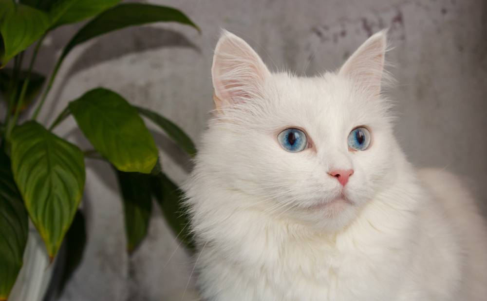

Angorá (gato)
O gato angorá é uma raça de gato doméstico. É uma das raças
mais antigas e naturais, tendo surgido na região de Ancara, na
Turquia.

Imagem Gato Angorá
Características Físicas
Gatos Angorás turcos têm pelagem longa e sedosa, seu corpo é
elegantemente curvado e de tamanho médio. Embora angorás sejam
conhecidos por uma pelagem branca e brilhante, gatos angorás turcos
podem exibir uma variedade de cores.
Genética
O gene W responsável pela pelagem branca e olhos azuis está
intimamente relacionado com a capacidade de audição nesta e em outras
raças, e na presença de um olho azul pode indicar que o gato é surdo
ao lado do olho azul, com alguns sendo totalmente surdos caso tenha
dois olhos azuis. No entanto, um grande número de gatos brancos de
olhos azuis em cores ímpares têm uma audição normal, e até mesmo gatos
surdos levam uma vida normal se mantidos dentro de casa.
História
Como todos os gatos domésticos, angorás turcos descendem do gato
selvagem Africano (Felis silvestris lybica). O Crescente Fértil era um
lugar onde os gatos foram domesticados pela primeira vez. Gatos de
regiões montanhosas do leste da Anatólia e através da consanguinidade
e da seleção natural, desenvolveram-se em raças de pelos longos, como
o Van turco e o Angorá turco.
Saúde
Um estudo genético de raças de gatos com pedigree (usando DNA retirado
de gatos com pedigree nos EUA e Europa) e de angorás criados no mundo
inteiro mostrou o Van turco como uma população distinta da Angorá
turco, apesar de sua associação geográfica. O Angorá turco foi
agrupado com o Mau egípcio de raça pura e gatos tunisinos de outras
raças. Gatos de raça turcos foram misturados com os gatos de raça
israelenses enquanto o Van turco foi misturado com gatos de raça
egípcia.
Temperamento
Angorás turcos são gatos brincalhões, inteligentes e atléticos. Eles se
relacionam bem com os seres humanos, mas muitas vezes escolhem um
determinado membro da família para ser seu constante companheiro.
Video relacionado